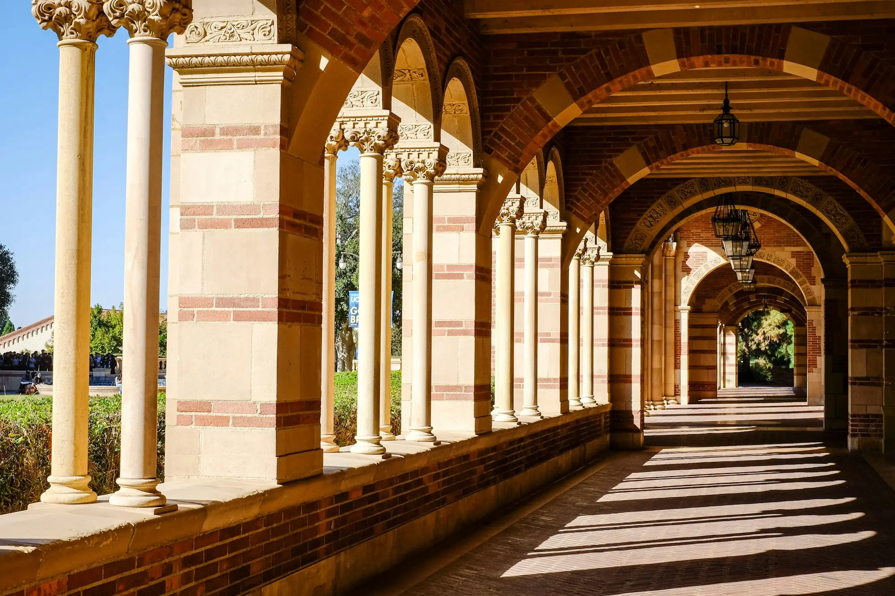

Team
The peoplebehind the signatures.
Psychiatrists, psychologists, data scientists and students working across disciplines toward earlier, more personal care.
Est. 20XXWestwood, LA
Lab members
Our group.

Group photo · replace
Swap this image for a lab group photo — just replace assets/img/royce-arcade.webp or change the src here.
Alumni
Open positions